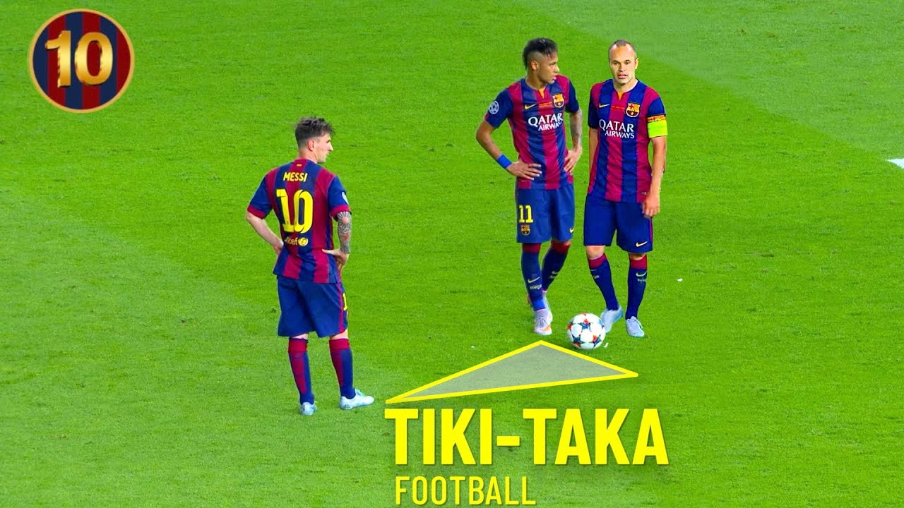

¿Qué es?

Tiki-taka es un estilo de juego de fútbol que se caracteriza por la utilización de pases cortos y precisos, el movimiento del balón y la búsqueda constante de espacio. El objetivo es mantener la posesión del balón hasta que se presente una oportunidad de ataque.
El término tiki-taka se asocia principalmente con la selección nacional de España desde 2006, gracias a los entrenadores Luis Aragonés y Vicente del Bosque. El presentador de televisión Andrés Montes popularizó el término en España durante la narración de los partidos del Mundial de 2006.
Tiki-taka también puede referirse a un juguete de malabares que consiste en dos esferas de plástico unidas por un cordel y un aro. El objetivo es mantener el equilibrio rotacional de las esferas golpeándolas con el mayor tiempo posible